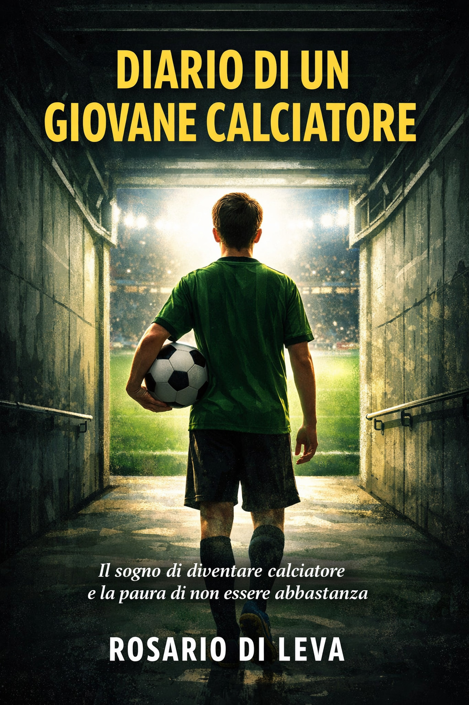

Diario di un giovane
calciatore.
Il sogno di diventare calciatore e la paura di non essere abbastanza
"Sono davvero abbastanza bravo?"
Il romanzo che ogni giovane calciatore dovrebbe leggere.
Ogni anno migliaia di ragazzi sognano di diventare calciatori. Pochissimi scoprono cosa succede davvero quando il sogno comincia a diventare serio.
Allenamenti durissimi. Partite che sembrano decidere tutto. Compagni che vogliono il tuo posto. Allenatori che non fanno sconti.
E una domanda che cresce ogni giorno nella testa di chi prova a emergere.
Il calcio visto dall'interno.
Il calcio giovanile è un mondo che pochi adulti conoscono davvero dall'interno. Non quello dei professionisti, con gli stadi pieni e i contratti milionari: quello dei ragazzini di dodici, tredici anni che ogni mattina si alzano presto, vanno agli allenamenti, e si chiedono se sono abbastanza bravi.
Ho voluto raccontare quella pressione silenziosa. La domanda che non si dice ad alta voce ma che accompagna ogni allenamento, ogni partita, ogni selezione.
Il diario come forma narrativa è stata una scelta precisa: volevo che il lettore stesse dentro la testa del protagonista, non fuori. Sentisse la stanchezza, la paura, la gioia piccola di un gol in allenamento.
È un libro che ho scritto pensando a tutti quei ragazzi che inseguono un sogno grande, e ai loro genitori che stanno a guardare dalla tribuna senza sapere cosa dire.